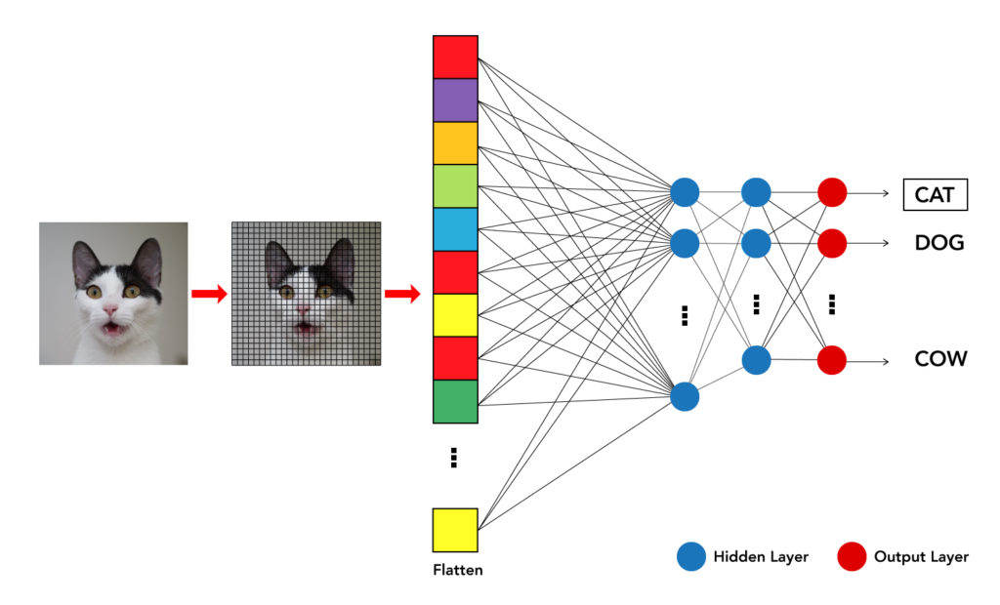
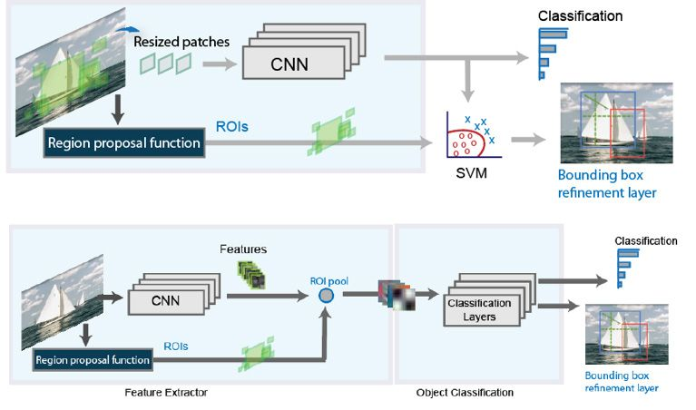

Image detection is a broad term that can refer to various tasks within the field of computer vision. Two common tasks associated with image detection are image classification and object detection
Object detection is a computer vision task that involves identifying and locating objects of interest within an image or video. The goal is to not only recognize the presence of objects but also to precisely determine their positions by drawing bounding boxes around them.
Made with ❤️ by @ascendantaditya